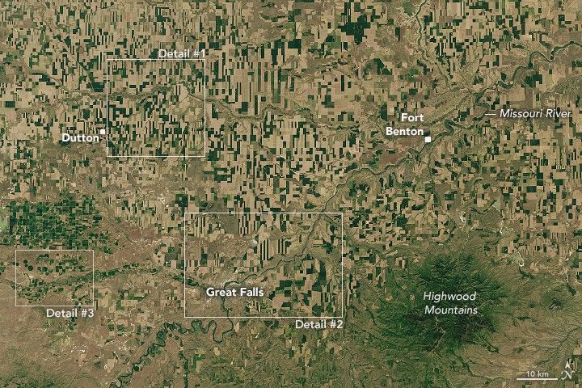

Geometry in the Golden Triangle
In the late 1800s, Charles Marion Russell (C.M. Russell) settled in Great Falls, Montana, where he made a living painting iconic images of the American West. The landscape of Montana’s northern Great Plains has changed since Russell’s time, as farmers adopted new agricultural practices. Today, the region continues to present striking scenery, resembling a modern-art painting when viewed from above.
In these satellite images, geometric agricultural land in north-central Montana mingles with the sinuous Missouri River and its tributaries. The images were acquired on June 14, 2024, with the OLI (Operational Land Imager) on Landsat 8.
Across Montana, wheat is the most valuable field crop. In 2024, around 5 million harvested acres of wheat were valued at more than a billion dollars, topping the charts in terms of production value, according to the USDA National Agricultural Statistics Service. Hay, pulses, barley, and several other crops also generated substantial revenue.
A detailed view of the first image highlights Great Falls and the Missouri River. The urban area toward the bottom-left appears white and gray. Agricultural fields are nestled within the arms of the river and appear in a wide range of shapes, from squares to triangles to rectangles.
A significant amount of Montana’s wheat is grown in the north-central part of the state, an area known as the “Golden Triangle.” These images show the southern part of the triangle, around Great Falls, Dutton, and Fort Benton. Grain crops were still growing at this point in June. Winter wheat is the first to be harvested, usually in late July and early August, followed by barley, spring wheat, oats, and durum wheat.
Most farmland in north-central Montana is dryland, which means farmers rely on precipitation to irrigate crops, particularly wheat. Some crops are irrigated with groundwater or water from rivers and reservoirs. For example, the circular fields along the Sun River (below) employ central pivot irrigation. Barley is a common crop grown in this area.
Images like these are striking, but they can also be useful. Data from Landsat can help people analyze crop health, measure water availability and use, and monitor the impacts of drought and other hazards.